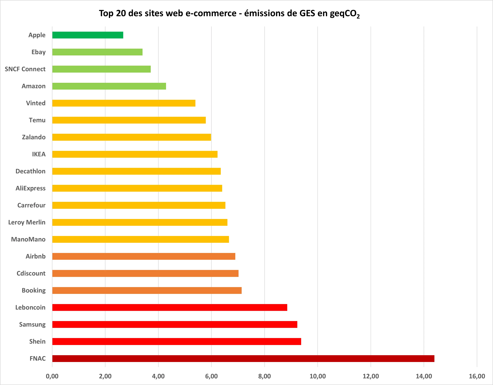
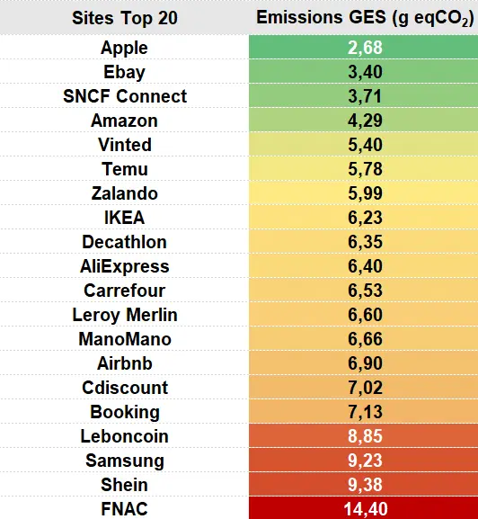
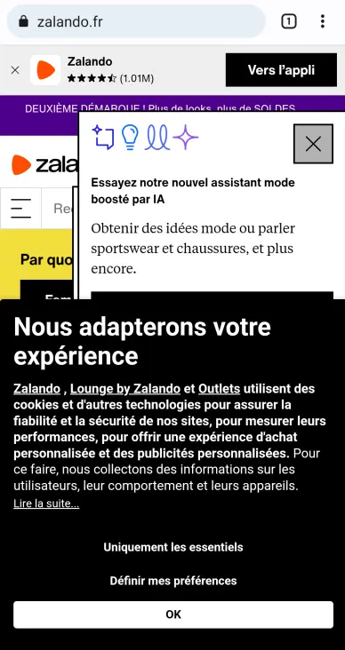
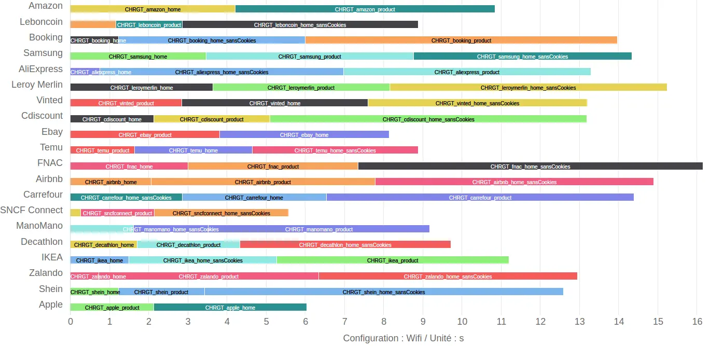
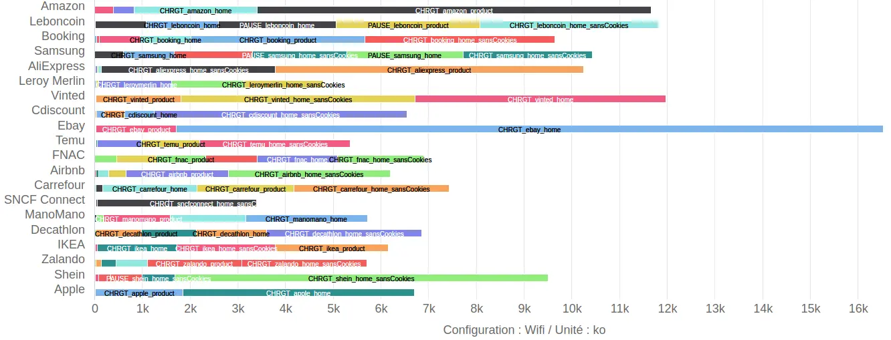
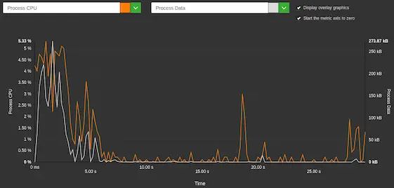
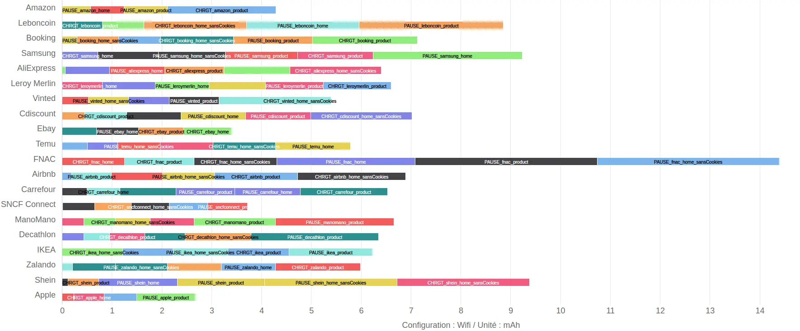
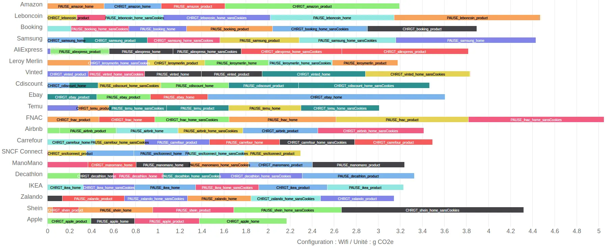
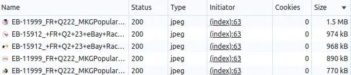

Impacts des principaux sites e-commerce en France – édition 2025
Les usages liés au e-commerce continuent à s’intensifier depuis plusieurs années déjà. Les chiffres de francenum.gouv.fr confirment l’adoption de plus en plus large de ce mode de consommation. L’UNCTAD (United Nations trade & development) propose de même quelques chiffres sur le commerce en ligne (en particulier une croissance de 60% des ventes depuis 2016) : https://unctad.org/publication/digital-economy-report-2024 [EN]
Ceci entraîne une consommation toujours plus importante de ressources afin de satisfaire à nos exigences d’e-consommateurs. Les impacts environnementaux du volet « physique » (fabrication de produits, livraison, retours, etc) sont de mieux en mieux documentés. Nous avons voulu dès 2020 nous intéresser aux impacts liés aux services numériques utilisés. Déjà à l’époque, Greenspector proposait des articles sur l’e-commerce et ses impacts environnementaux. Plus récemment, nous nous sommes penchés sur les applications mobiles utilisées pour effectuer des achats en ligne (dès 2022).
Datareportal founit quelques chiffres intéressants à ce sujet pour 2024 :
-
- 51,4 % des achats liés au e-commerce sont effectués sur mobile
-
- En termes de valeurs, les achats en ligne correspondent à 17,3 % des achats effectués en tout
Nous avons cette année fait le choix de nous pencher plus en détail sur les sites web car ils sont utilisés sur tous types de terminaux. Nous avons ainsi pu plus facilement mesurer des parcours plus représentatifs de ceux des e-consommateurs. Pour cela, nous partons d’un classement de ces sites pour ensuite les mesurer, évaluer leurs impacts environnementaux puis essayer de proposer une vision plus globale des axes d’amélioration.
Nous avons profité de la période des soldes qui se manifeste par une hausse des achats mais aussi, bien souvent, par une augmentation sur les sites web des éléments (bandeaux et autres) visant à attirer l’attention des e-consommateurs.
Pour une remise en contexte plus large des achats en ligne, je vous recommande l’article de Laurence Roger : https://les-enovateurs.com/acheter-en-ligne-ou-boutique-pas-exactement-pareil
Liste des sites retenus
La liste retenue pour les principaux sites de e-commerce, classés par trafic en France en 2024, est : https://www.observatoire-ecn.fr/demo/listing
-
- https://www.amazon.com
-
- https://www.leboncoin.fr
-
- https://www.booking.com
-
- https://www.samsung.com
-
- https://www.aliexpress.com
-
- https://www.leroymerlin.fr
-
- https://www.vinted.com
-
- https://www.cdiscount.com
-
- https://www.ebay.com
-
- https://www.temu.com
-
- https://www.fnac.com
-
- https://www.airbnb.com
-
- https://www.carrefour.com
-
- https://www.sncf-connect.com
-
- https://www.manomano.fr
-
- https://www.decathlon.fr
-
- https://www.ikea.com
-
- https://www.zalando.com
-
- https://www.shein.com
-
- https://www.apple.com
Classement obtenu
Le classement des sites, du parcours le moins impactant au plus impactant (pour l’émission de gaz à effet de serre) est le suivant :


Méthodologie
Les mesures ont été effectuées sur un smartphone Samsung Galaxy S10 sous Android 12.
Initialement, les mesures avaient été réalisées via un benchmark simple (chargement, scroll et pause sur chaque page). Les sites retenus se sont avérés complexes et le parcours par défaut peu représentatif du comportement des utilisateurs. Nous avons alors décidé d’opter pour des mesures plus précises via un parcours utilisateur représentatif de ce que font la plupart des clients. Elles ont été réalisées via la solution SaaS Greenspector Studio par l’automatisation et la mesure d’un parcours standard :
-
- Chargement de la page
-
- Lecture (30s)
-
- Acceptation de tous les cookies (si bandeau pour ça)
-
- Scroll vers le bas
-
- Lecture (30s)
-
- Chargement d’une page produit
-
- Lecture (30s)
-
- Scroll vers le bas
-
- Lecture (30s)
Chaque mesure est la moyenne de 3 mesures homogènes (avec un écart-type faible). Pour chacune des itérations, le cache est préalablement vidé. Par la suite, il est conservé au cours d’une même itération (ce qui permet notamment d’évaluer ce qui est gardé en cache pour le passage sur une fiche produit).
Différentes hypothèses ont été prises pour la projection environnementale. Le but ici est de simplifier les calculs, même si les choix retenus ne s’appliquent pas pour tous les sites étudiés :
-
- 100 % des utilisateurs et serveurs localisés en France
Répartition des terminaux utilisateurs (source : https://datareportal.com/reports/digital-2024-france [EN]) :
-
- 49% sur smartphone
-
- 3 % sur tablette
-
- 48% sur PC
Interlude
L’intérêt d’automatiser les parcours sur les sites retenus permet d’avoir une vision plus complète de leurs comportements :
-
- Tenir compte du cache côté client
-
- Mesurer l’impact de l’acceptation de tous les cookies
-
- Se mettre à la place du client qui cherche quelque chose sur le site
Constats généraux
Plusieurs constats globaux s’imposent :
-
- Beaucoup d’images et d’animations
-
- Beaucoup de requêtes, d’autant plus après avoir accepté les cookies
-
- Des écrans souvent très chargés.
On citera par exemple la page d’accueil du site de Zalando où l’écran est principalement occupé par le bandeau de consentement des cookies, la promotion d’un nouvel outil basé sur l’Intelligence Artificielle, un bandeau pour les soldes et un autre pour installer l’application mobile.

Synthèse des résultats
À la suite des mesures via Greenspector Studio, les étapes identifiées vont être notées selon trois critères :
-
- La durée de l’étape (notamment pour comparer le chargement des différents écrans)
-
- Les volumes de données transférées
-
- L’énergie consommée (via la décharge de batterie)
Nous allons regarder les classements des différents sites selon chacun de ces critères afin d’identifier ceux qui nécessiteraient plus particulièrement notre attention. En recoupant ces différents classements, nous identifierons des sites à analyser en priorité.
Durée de chargement

La durée des étapes de pause est fixe (30s). Il nous reste donc à voir la durée des autres étapes.
On constate ici que SNCF Connect s’en sort le mieux avec le parcours le plus rapide, suivi de près par Apple.
À l’opposé, on trouve le site de la FNAC qui souffre ici des étapes les plus longues. Il est suivi de près par Leroy Merlin et Airbnb.
Il est d’usage de se fixer un seuil de 3 s pour le chargement d’une page (ce qui fait référence à une ancienne statistique de Google). On note ici que le chargement des pages est le plus souvent au-dessus de ce seuil, jusqu’à 9s environ pour les pages d’accueil du site de la FNAC et de Shein.
On note en particulier que le chargement de certaines pages produit est très long (même s’il peut en théorie s’appuyer sur les données mises en cache lors du chargement de la page d’accueil) : par exemple pour Booking et Carrefour.
Données transférées

Le parcours nécessitant le moins de données transférées est là encore pour SNCF Connect, suivi par Leroy Merlin. Dans le cas du site de Leroy Merlin, il sera donc intéressant de regarder pourquoi le site nécessitant le moins de données est l’un des plus longs à charger.
Le site pour lequel le parcours mesuré implique le plus de données transférées est Ebay, suivi par Vinted et Leboncoin.
La grande majorité des étapes de chargement nécessitent ici plus d’1 Mo de données transférées.
Le parcours mesuré ici permet de repérer l’utilisation importante de services-tiers de deux façons :
-
- La distinction entre CHRGT_[nom_du_site]_home_sansCookies (premier chargement de la page d’accueil) et CHRGT_[nom_du_site]_home (acceptation de tous les cookies). Lorsque cette deuxième étape de chargement nécessite d’importants transferts de données, ceux-ci sont d’une façon ou d’une autre liés à des services tiers. Quelques rares sites ne proposent même pas de bandeau d’acceptation des cookies (ce qui met en évidence l’absence de collecte de données personnelles ou un problème de conformité au RGPD) et n’ont dans ce cas que l’étape CHRGT_[nom_du_site]_home. C’est notamment le cas pour le site d’Ebay.
-
- Les transferts de données effectués pendant les étapes de pause.
On remarque également des transferts de données importants lors de certaines étapes de pause :
-
- Utilisateur inactif sur une fiche produit sur Leboncoin (et sur la page d’accueil)
-
- Utilisateur inactif sur l’accueil du site de Samsung
On note d’autres sites pour lesquels les données transférées lors de certaines étapes de pause sont conséquentes en volumes.
Dans le cas de Leboncoin, Greenspector Studio nous montre le graphe suivant pour une pause sur la page d’accueil :

On constate que les transferts de données supplémentaires semblent ici être dus à un reliquat de chargement. La tendance est la même pour la pause sur une fiche produit du même site. A priori, le site a été optimisé du point de vue de la performance pour afficher les pages aussi rapidement que possible. Mais, même lorsque le chargement apparaît terminé, d’autres opérations sont en cours. Une fois le chargement vraiment terminé, d’autres petits pics de données et de CPU apparaissent, ce qui est généralement lié à des services-tiers.
Sur la page d’accueil du site de Samsung, on aboutit aux mêmes constats.
Énergie

Le site pour lequel le parcours mesuré est le moins impactant du point de vue de l’énergie est le site d’Apple, suivi par Ebay et SNCF Connect. Il sera intéressant ici de regarder de plus près Ebay (beaucoup de données mais peu impactant pour l’énergie), Apple et SNCF Connect (qui apparaissent plutôt peu impactants).
On constate pour la majorité des sites des impacts conséquents sur la décharge de batterie. En particulier, les étapes de pause sur le site de la FNAC sont très impactantes. Nous les analyserons par la suite. En général, ces surconsommations peuvent être liées à des traitements en tâche de fond (analytics et autres services tiers), à des animations voire à une charte graphique trop claire (dans le cas d’un écran OLED ou AMOLED).
Émissions de gaz à effet de serre

Les émissions de gaz à effet de serre sont calculées à partir du modèle de projection de Greenspector mentionné plus haut dans cet article. Les paramètres vus précédemment (données transférées, durée des étapes et énergie) entrent donc en ligne de compte dans leur calcul.
Le site le moins impactant du point de vue des émissions de gaz à effet de serre serait donc celui d’Apple, suivi par SNCF Connect.
Le plus impactant serait le site de la FNAC, suivi par Leboncoin et Samsung.
Par la suite, nous analyserons donc :
-
- Deux sites qui apparaissent plutôt sobres : SNCF Connect et Apple
-
- Un site nécessitant peu de données mais pour lequel les étapes sont les plus longues : Leroy Merlin
-
- Un site a priori lourd (en termes de données transférées) mais rapide : Ebay
-
- Deux sites parmi les plus impactants même s’ils ne ressortent pas particulièrement des classements sur les différentes métriques : FNAC et Leboncoin
Analyse de certains sites
SNCF Connect
SNCF Connect apparaît comme l’un des sites les plus sobres. Pour autant, tout n’est pas parfait. En particulier, on note quasiment 2 Mo de données transférées pour la page d’accueil et 1,5 Mo pour la page produit. Malgré tout, ce site reste l’un des plus rapides à charger mais aussi l’un des moins consommateurs du point de vue de l’énergie. Ce site est donc l’un des plus exemplaires du lot du point de vue de l’écoconception, ce dont témoigne une déclaration à ce sujet. Cette volonté est très marquée au niveau de la conception du site mais s’appuie aussi sur le fait que celui-ci nécessite moins de supports visuels que d’autres sites d’e-commerce (qui doivent mettre en avant des visuels de leurs produits). De même, on remarque peu de contenu animé sur ces pages (animation ou vidéo).
Apple
Sur ce site, les fichiers les plus lourds sont ceux des polices des caractères. Il est également assez étonnant de voir que certaines bonnes pratiques de base comme la minification du code ne sont pas appliquées.
Les pages d’accueil et produit sont plutôt légères au niveau de la conception: pas de vidéo préchargée ni d’animations, assez peu de services tiers.
Comme pour le site de SNCF Connect, on remarque donc que les deux sites les mieux classés s’affranchissent des “mauvaises habitudes” des autres sites d’e-commerce. Ainsi, on aperçoit peu ou pas d’images, d’animations ou de services-tiers (en tout cas sur le site d’Apple). De même, les mécanismes déceptifs incitant à l’achat sont moins nombreux que sur les autres sites du classement.
Autre point commun : l’outil WAVE de vérification (automatique et partielle) de l’accessibilité ne signale que très peu d’erreurs (en-dehors de plusieurs erreurs d’accessibilité sur la page d’accueil du site d’Apple).
Leroy Merlin
Souvent, la page d’accueil redirige vers un CAPTCHA, ce qui fausse parfois les mesures et limite l’utilisation de certains outils d’analyse de la performance.
Les images sont plutôt bien optimisées (format WebP, plutôt légères, etc). Même si très légère, l’image principale (LCP : Largest Contentful Paint) met plus de 4 secondes à s’afficher. L’impact de Javascript apparaît plutôt conséquent, ce qui contribue à retarder l’affichage.
De plus, le fait d’afficher un carousel au défilement automatique nuit à la détection de la fin du chargement de la page.
Afin de contourner ces soucis de mesure, CrUXVis permet de vérifier que les métriques de performance sont bonnes et stables dans le temps.
CrUXVis recueille les scores de performance auprès des utilisateurs de Chrome navigant sur le site.
Ebay
Une rapide analyse de la page d’accueil met en évidence plusieurs images qui gagneraient à être davantage optimisées :
-
- Passage au format WEBP
-
- Ne pas redimensionner les images dans le navigateur
-
- Ajuster la qualité des images

L’optimisation (de préférence automatisée) de ces images pourrait très facilement alléger les impacts du site.
De même, certains fichiers de code ne sont pas minifiés et devraient l’être. Plus généralement, le traitement du Javascript nuit fortement à la performance du site.
On constate assez peu de services tiers sur le site.
On constate ici que les résultats que nous avons obtenus pour la performance concernent le premier chargement de la page. Toutefois, celui-ci est plus complexe et les éléments affichés changent plusieurs fois avant de se stabiliser. Dans ce cas, via l’automatisation pour les mesures avec Greenspector Studio, il est possible de définir précisément l’élément à attendre pour considérer la page comme complètement chargée.
Les transferts de données importants sont ici un symptôme important de performances dégradées.
Leboncoin
Les images apparaissent globalement bien optimisées, notamment via la conversion au format AVIF.
On note en revanche de nombreux services-tiers ainsi que quantité de fichiers JS dont certains très volumineux.
En-dehors du LCP, les Core Web Vitals sont plutôt satisfaisants.
Le site nécessiterait donc une investigation plus poussée pour optimiser le JS et auditer les services-tiers.
FNAC
Les constats sont similaires pour le site de la FNAC : images optimisées, JS à optimiser et services-tiers à auditer.
CrUXVis confirme que les Core Web Vitals sont pour ce site bien en retrait.
Il est également important de noter que WAVE signale de nombreuses erreurs d’accessibilité, ce qui confirme une dégradation considérable de l’expérience utilisateur alors même que la mise en accessibilité des services numériques fait l’objet d’obligations légales.
Pour un e-commerce soutenable
L’écoconception des sites web et applications mobiles est un sujet de plus en plus amplement couvert, notamment sur notre blog.
Ce classement des sites d’e-commerce confirme que la plupart gagneraient à afficher moins d’éléments, à être mieux optimisés techniquement, à limiter les services tiers et les mécanismes déceptifs mais surtout à adopter un fonctionnement global plus durable.
Cet article a été l’occasion de découvrir les conséquences d’une expérience utilisateur toujours plus laborieuse : des popups à foison, des captchas, la nécessité de se connecter, etc.
Si les sites d’e-commerce ont en théorie bien assimilé les apports financiers de la performance web, il serait important qu’ils prennent de plus en plus en compte la réduction de leurs impacts environnementaux. Ces efforts peuvent constituer un avantage différenciant pour ceux qui s’en donnent la peine.
De même, via le chapitre Sustainability du Web Almanac, nous avons pu constater que certains de ces efforts peuvent être portés directement par les outils clés en main permettant de construire des boutiques en ligne : https://almanac.httparchive.org/en/2024/sustainability#popular-frameworks-platforms-and-cmss [EN]
On retrouve plus généralement les constats habituels dès lors que l’on analyse l’écoconception de services numériques :
-
- Des quick wins liés à de l’optimisation technique
-
- Des opportunités de sobriété, que ce soit au niveau des contenus et plus généralement des éléments affichés ainsi que des services tiers
-
- Des possibilités plus difficiles à mettre en œuvre mais très prometteuses “au-delà du site” : produits davantage respectueux de l’environnement, valeurs de l’entreprise, livraison et traitement des commandes
La réduction des impacts environnementaux de l’e-commerce va donc bien au-delà de la technique et du design, même si ces deux volets peuvent permettre de mettre en œuvre des quick wins qui amorceront une démarche d’amélioration continue beaucoup plus large.
Cet article illustre bien le fait que l’écoconception des sites web et applications mobiles ne sont qu’une partie du sujet : https://uxdesign.cc/re-defining-sustainable-e-commerce-51cdc3e76d46 [EN].
En complément, l’ADEME (Agence de la Transition Ecologique) propose un site dédié au marketing responsable. Celui-ci présente des cas concrets ainsi que des livres blancs sur le sujet : https://reussir-avec-un-marketing-responsable.org/
Il est également indispensable de prendre en compte les valeurs de l’entreprise, la conception des produits et les modes de livraison. Plus que pour n’importe quelle autre typologie de site ou d’application, l’e-commerce doit cesser de s’appuyer sur des mécanismes déceptifs. Inversement, ce type de service numérique devrait envisager des “nudges”(incitations légères) à des comportements plus responsables.